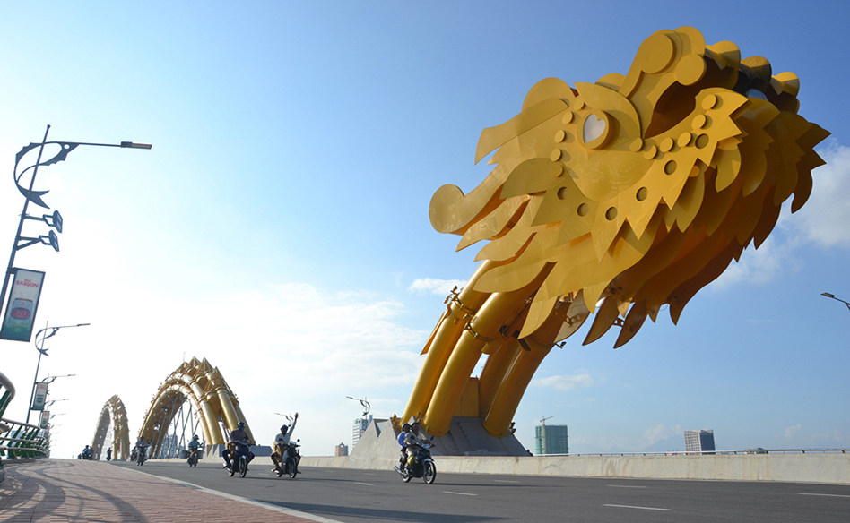
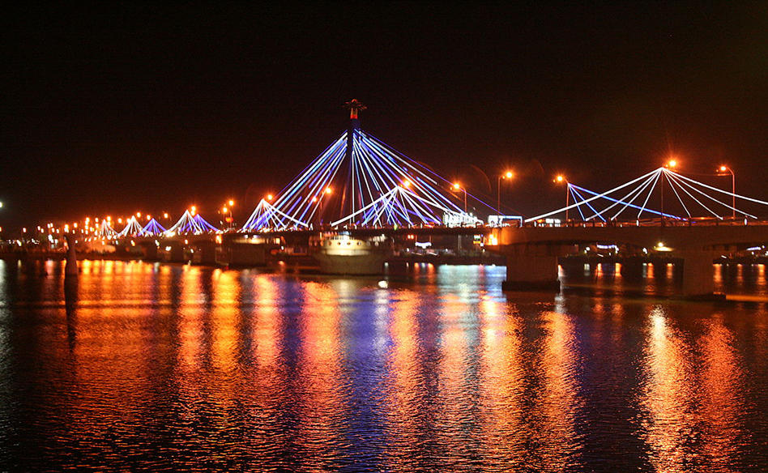
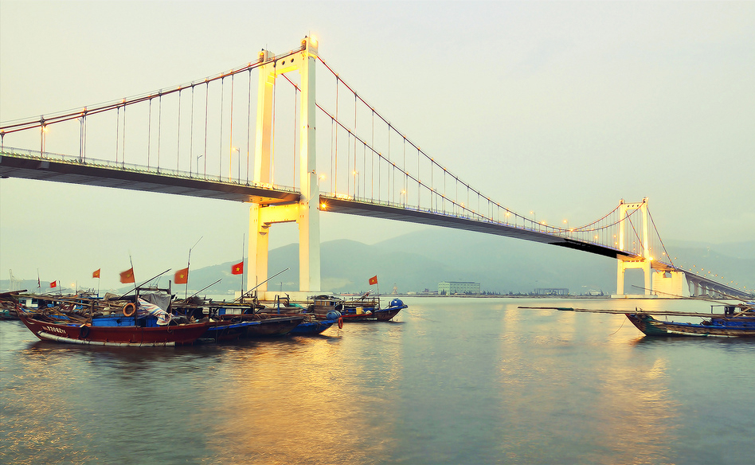
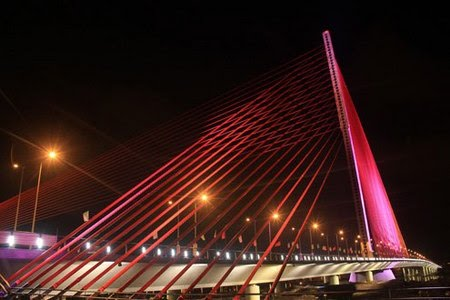
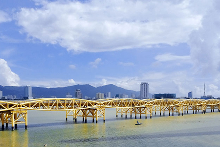

Chào mừng các bạn đến với Website
giới thiệu về thành phố Đà Nẵng
Đà Nẵng là một thành phố thuộc trung ương, nằm trong vùng Nam Trung Bộ, Việt Nam. Là trung tâm kinh tế, tài chính, chính trị, văn hoá, du lịch, xã hội, giáo dục, ...
Xem thêm...
Cầu Rồng

Chiếc cầu này bắc ngang qua sông Hàn có kiến trúc độc đáo với hình dáng con rồng vươn mình bay ra biển. Đầu rồng có khả năng phun lửa và nước. Cầu được khởi công xây dựng tháng 7/2009 và hoàn thành sau gần 4 năm thi công, dài 666 m và tổng vốn đầu tư hơn 1.700 tỷ đồng. Cầu rồng mô phỏng hình dáng con rồng thời Lý bay ra biển Đông với nhịp thép có tổng chiều dài 568 m. Đây là cây cầu có thiết kế dạng vòm thép đơn duy nhất tại khu vực Đông Nam Á.Xem tiếp
Cầu sông Hàn

Cầu là vạch nối liền hai trục đường chính của thành phố là đường Lê Duẩn ở bờ Tây và đường Phạm Văn Đồng ở bờ Đông. Chiếc cầu quay đặc biệt này do đội ngũ chuyên gia, kỹ sư Việt Nam thiết kế, thi công giai đoạn 1998 - 2000. Cầu dài gần 500 m, rộng 12 m, nối liền hai tuyến đường trung tâm giữa quận Hải Châu và quận Sơn Trà. Mỗi ngày đều đặn vào 1h sáng, phần giữa của cây cầu lại quay 90 độ mở đường cho tàu thuyền lớn qua lại trên sông Hàn.Xem tiếp
Cầu Thuận Phước

Cầu Thuận Phước là cây cầu treo dây võng bắc qua 2 bờ sông Hàn đổ ra Vịnh Đà Nẵng, nối đường Nguyễn Tất Thành với cầu Mân Quang, giữa 2 Quận Hải Châu và Sơn Trà thuộc thành phố Đà Nẵng. Cầu Thuận Phước được khởi công xây dựng vào ngày 16 tháng 1 năm 2003, với vốn đầu tư gần 1000 tỷ đồng do thành phố Đà Nẵng làm chủ đầu tư từ nguồn ngân sách. Cầu thông xe kỹ thuật ngày 25 tháng 3 năm 2009 và khánh thành ngày 19 tháng 7 năm 2009.Xem tiếp
Cầu Trần Thị Lý

Cầu Trần Thị Lý được thiết kế theo hình dáng cánh buồm trên sông Hàn. Cầu được khởi công tháng 4/2010, dài 731m, rộng 34,5m và có vốn đầu tư hơn 1.700 tỷ đồng. Cầu được khánh thành đưa vào sử dụng tháng 3/2013. Cầu có một trụ tháp bằng bê tông cốt thép nghiêng 12 độ, có 3 mặt dây văng và không có thiết kế dạng ngàm cứng như các cầu dây văng thông thường mà được liên kết cứng với đầm mặt cầu, tựa trên trụ S5 thông qua gối cầu hình chỏm để giảm kích thước bệ móng, tiết kiệm vật liệu.Xem tiếp
Cầu Nguyễn Văn Trỗi

Cầu Nguyễn Văn Trỗi có tuổi thọ lâu đời nhất, cầu gồm 14 nhịp giàn thép Poni dài hơn 500 m, khổ cầu 10,5 m, không có lề dành cho người đi bộ. Hiện, cây cầu này được giữ lại như một kỷ vật của Đà Nẵng để phục vụ cho phố đi bộ. Cầu này do hãng RMK (Mỹ) thiết kế và thi công hoàn thành năm 1965. Việc lấy tên anh hùng Nguyễn Văn Trỗi đặt cho cầu để tưởng nhớ người thực hiện cuộc đánh bom nhằm mưu sát Bộ trưởng Quốc phòng Mỹ McNamara năm 1964.Xem tiếp
Cầu Tình yêu

Cầu Tình Yêu nằm ở bờ Đông sông Hàn,Đà Nẵng được khánh thành và đưa vào sử dụng vào tháng 5 năm 2015 và nhanh chóng trở thành điểm hẹn hò mới của giới trẻ và khách du lịch thập phương bởi vẽ đẹp lãng mạng và vị trí thuận lợi cho hoạt động du lịch của cây cầu này. Được xây dựng theo ý tưởng từ những cây cầu treo ổ khóa tình yêu nổi tiếng thế giới, như Pont des Arts bắc qua dòng sông Seine (Pháp), tháp Nam San (Hàn Quốc) hay Milvio - cây cầu cổ nhất ở thủ đô Roma (Italy)…Xem tiếp
Cầu Vượt Ngã 3 Huế

Cây cầu là ngã ba giao cắt giữa QL1A với đường Điện Biên Phủ (đường trục chính ra vào trung tâm TP. Đà Nẵng) và tuyến đường sắt quốc gia Hà Nội – TP.HCM. Cây cầu được thiết kế cực kỳ đẹp với 3 tầng độc đáo, thu hút rất nhiều khách tham quan trong và ngoài nước đến để chiêm ngưỡng. Ý tưởng kiến trúc tổng thể của Nút giao thông Ngã Ba Huế là hình dáng cách điệu cho biểu tượng Linga và Yoni của thần Shiva, tượng trưng cho sự sáng tạo và khởi đầu mới.Xem tiếp